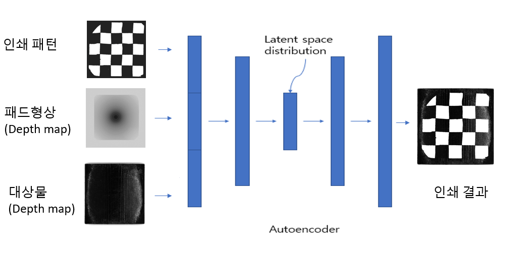

1. AI기반 조난자 탐색 엔진 개발
| 개 요 |
조난자 탐색을 위한 AI 엔진 개발(한국표준협회 교육과정) |
| 세부내용 |
드론에 올릴수 있는 소형 GPU 전용 AI 경량 엔진 개발 및 성능 테스트 수행 |
| 소속기관 |
AI 기반 혁신 인재 양성 프로그램 |
| 수행기간 |
`19.06 ~`19.11(6개월) |
| 실적 |
기업(무지개 연구소) 조난자 탐색 프로그램 엔진 채택 |
| 데모 |
|
2. 고무제품 형상 설계 툴 개발
| 개 요 |
고무제품 전사 결과를 예측하기 위한 툴 개발 |
| 세부내용 |
"PAD 프린팅"에 사용되는 패턴, PAD 형태, 전사 대상물 형체의 3가지 Input data를 통해 전사 결과물을 output으로 하는 엔진 개발 및 UI 개발 |
| 소속기관 |
영동테크 AI 연구소 (경북IT융합산업 기술원 과제) |
| 수행기간 |
`21.07 ~`22.12(6개월) |
| 실적 |
개발 완료, 엔진 정확도 80%이상 달성 |
| 데모 |
 |
3. 고무제품 양불검사를 위한 AI 검사기 개발
| 개 요 |
고무제품 자동검사를 위한 자동 검사기 개발 |
| 세부내용 |
룰베이스 방식을 적용하기 어려운 고무제품에 AI기반 솔루션을 사용하여 제품 자동 검사기의 개발 |
| 소속기관 |
영동테크 AI 연구소(중기부 과제) |
| 수행기간 |
`21.07 ~`22.07(1년) |
| 실적 |
재현율: 96%이상 도달, 정밀도 : 90% 이상 도달 |
| 데모 |
이미지 |
e-mail : tbh00228@gmail.com
github : https://junwoochoi94.github.io/index.html
blog : https://awesomeday94.tistory.com